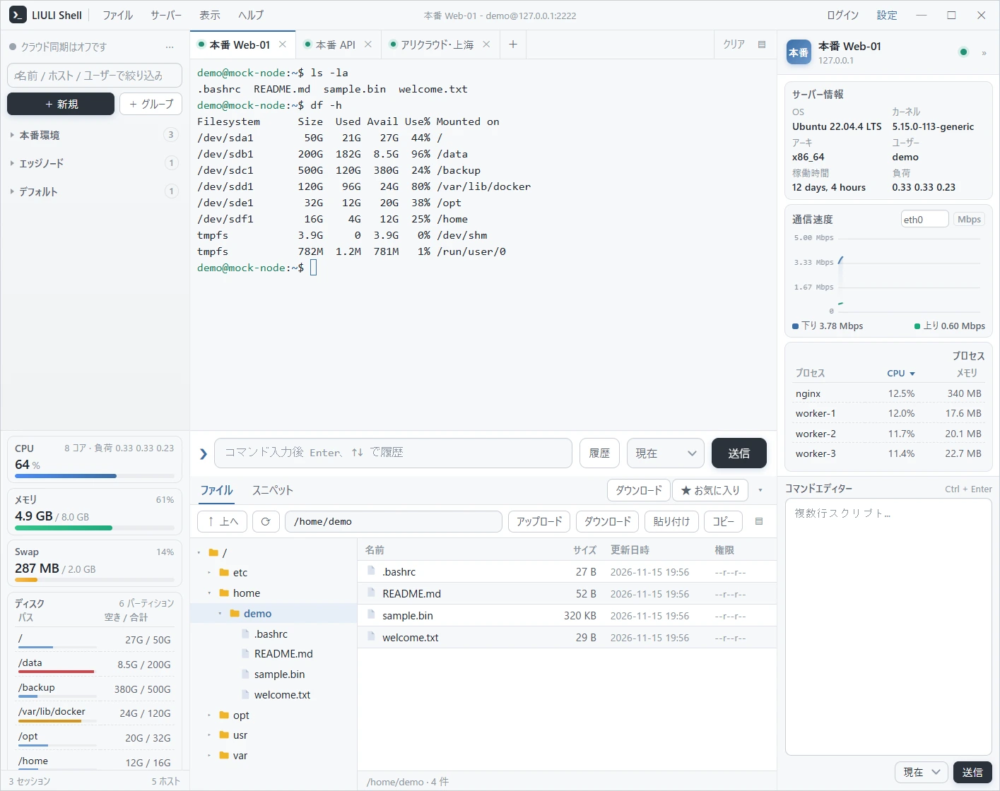
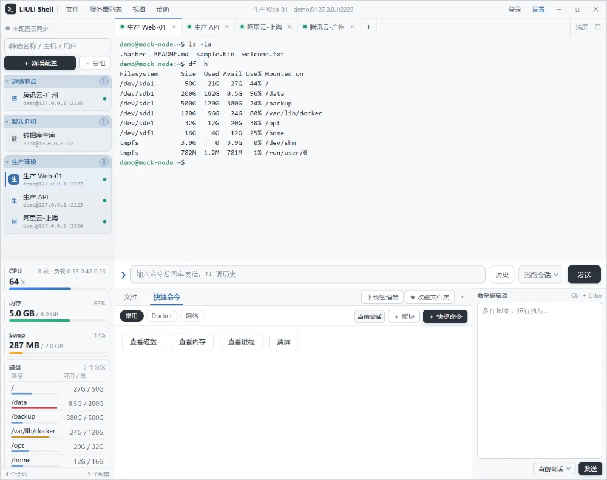

▤
サーバー管理
グループでサーバーを整理し、複数選択、ドラッグでの移動、設定のコピーに対応します。削除した接続は 30 日間のゴミ箱に入り、いつでも復元できます。
LIULI Shell はクロスプラットフォームの SSH クライアントです。
接続管理、インタラクティブなターミナル、SFTP ファイル転送、稼働状態のモニタリング、設定同期を 1 つのデスクトップアプリに統合しました。複数のサーバーを同時に管理する開発者や運用担当者に適しています。

Windows 10 / 11 はインストーラー版とポータブル版を用意しています。Linux と macOS はソースからビルドします。インストーラー版とポータブル版の機能は同じです。
インストーラー版はセットアップウィザードとショートカットを作成します。ポータブル版は解凍するだけで使え、USB メモリや一時的な環境に適しています。
夸克网盘を開く ↗海外のネットワークからのアクセスに適しており、リリースの添付ファイルとリポジトリのコミットは同期して更新されます。
GitHub Releases へ ↗中国国内のネットワークからのアクセスに適しており、ポータブル版の添付ファイルを提供します。リポジトリとリリースは同期しています。
Gitee Releases へ ↗対象システムに依存関係をインストールしてパッケージ化します。deb、AppImage、tar.gz、および macOS の dmg と zip に対応しています。
%APPDATA%\LIULI Shell。アップグレードや再インストールでも削除されません。別のパソコンに移行する場合は、クラウド同期によるバックアップ、または設定で設定ファイルをエクスポートして移行できます。
Linux と macOS ではローカルでのビルドが必要です。以下のコマンドは 1 行ずつ実行してください。まとめて貼り付けないでください。スクリプトはディストリビューションを識別し、依存関係をインストールして、パッケージの種類を確認します。
まずソースの取得元（Gitee または GitHub のいずれか一方）を選び、ディレクトリに移動してビルドスクリプトを実行します。
Gitee のデフォルトのクローン先は liuli-shell、GitHub のデフォルトディレクトリは Liulishellです。以下では統一して liuli-shellにクローンし、以降のコマンドもこれに合わせます。
Git が必要です。ステップ 0 で Git をインストールし、ステップ 1 ではソースを 1 つだけ残し、ステップ 2 でビルドスクリプトを実行します。クローンが完了してからビルドコマンドを実行してください。
# 0) Git が必要です。インストール済みなら自動的にスキップ（他のディストリビューションでは dnf / pacman に置き換え） command -v git >/dev/null || sudo apt-get update && sudo apt-get install -y git # 1) 古いディレクトリを削除してからソースをクローン（Gitee / GitHub のいずれか） # Gitee（中国国内推奨、デフォルトディレクトリは liuli-shell） rm -rf liuli-shell Liulishell && git clone https://gitee.com/liuliwanjiaweb/liuli-shell.git liuli-shell # GitHub（海外推奨、デフォルトディレクトリは Liulishell。ここでは明示的に liuli-shell を指定） rm -rf liuli-shell Liulishell && git clone https://github.com/LIULIWANJIA/Liulishell.git liuli-shell # 2) プロジェクトに移動してビルド：ディストリビューションを識別 → システム依存関係を補完 → deb / AppImage を選択 → パッケージ化 → インストールを確認 cd liuli-shell && bash scripts/build-linux.sh
成果物は dist/に出力されます。スクリプトは次の中から選択を求めます： 1 = deb / 2 = AppImage / 3 = 両方。一方だけを作る場合は .tar.gz を使用します bash scripts/build-linux.sh tar。スクリプトは Ubuntu 24.04 以降の *t64 パッケージ名のフォールバックを自動的に処理します。CI などの非対話環境では自動インストールされないため、成果物を手動でインストールしてください。環境に問題がある場合は bash scripts/build-linux.sh check で診断できます。Electron のダウンロードが遅い場合、スクリプトは自動的にミラーを切り替えます。
# 3) 依存関係のインストールに失敗した場合やビルドでエラーが出た場合は、次の順に試す
bash scripts/build-linux.sh repair
bash scripts/build-linux.sh deps
bash scripts/build-linux.sh
基本環境がインストール済みの場合は自動的にスキップされます。Homebrew のインストール中に現在のユーザーのパスワード入力が必要です。クローン後に依存関係をインストールしてパッケージ化します。Intel と Apple Silicon は必要に応じて選択できます。
# 基本環境（インストール済みなら自動的にスキップ。xcode-select はダイアログを表示するので、インストール完了まで待つ） xcode-select --install 2>/dev/null || true command -v brew >/dev/null || /bin/bash -c "$(curl -fsSL https://raw.githubusercontent.com/Homebrew/install/HEAD/install.sh)" # Homebrew を新規インストールしたら現在のターミナルの PATH に追加（Intel は /usr/local/bin/brew） if [ -x /opt/homebrew/bin/brew ]; then eval "$(/opt/homebrew/bin/brew shellenv)"; elif [ -x /usr/local/bin/brew ]; then eval "$(/usr/local/bin/brew shellenv)"; fi # Node ≥ 18 が必要。未導入またはバージョンが古い場合は 20 をインストールしてから確認 node -v 2>/dev/null | grep -qE '^v(1[89]|[2-9][0-9])' || brew install node@20 brew link --overwrite --force node@20 >/dev/null 2>&1 || true node -v && npm -v # 古いディレクトリを削除してからソースをクローン（Gitee / GitHub のいずれか） rm -rf liuli-shell Liulishell # Gitee（中国国内推奨、デフォルトディレクトリは liuli-shell） git clone https://gitee.com/liuliwanjiaweb/liuli-shell.git liuli-shell # GitHub（海外推奨、デフォルトディレクトリは Liulishell。ここでは明示的に liuli-shell を指定） git clone https://github.com/LIULIWANJIA/Liulishell.git liuli-shell
cd liuli-shell npm ci || npm install # 失敗時は自動的に npm install にフォールバック npm run vendor # 中国国内で Electron のダウンロードが遅い場合は、次の 2 行のコメントを解除（任意） # export ELECTRON_MIRROR=https://registry.npmmirror.com/-/binary/electron/ # export ELECTRON_BUILDER_BINARIES_MIRROR=https://registry.npmmirror.com/-/binary/electron-builder-binaries/ npm run dist:mac # x64 + arm64 をまとめて出力 npx electron-builder --mac dmg zip --arm64 # Apple Silicon のみ
成果物は dist/（.dmg / .zip）。npm run vendor xterm のリソースを次の場所にコピーします： src/renderer/vendor。パッケージ化の前に必ず実行してください。Intel と Apple Silicon の成果物は混在できません。署名のないアプリが Gatekeeper にブロックされた場合は、右クリックで「開く」を選んで許可します。
中国国内のネットワークでは Gitee を推奨します。Electron のダウンロードが遅い場合はミラー変数を設定してください。
FinalShell がエクスポートした JSON ファイル、または設定フォルダー全体をインポートできます。インポート時には接続情報を読み取り、グループ階層を再構築し、書き込み前に統計を表示します。
ファイルをドラッグするだけで、複数の JSON または設定フォルダー全体を選択できます。
フォルダーは階層に従って自動的にグループを作成します（最大 3 階層）。3 階層より深いフォルダー内の JSON は、保存先グループに関係なく対応する 1 階層目のグループにまとめます。
利用上の質問、機能の提案、バージョンの最新情報はグループで共有されます。よく使うプラットフォームに参加してください。
サーバーへの接続からファイル転送、状態確認、設定の移行まで、主な操作はクライアント内で完結します。以下で各モジュールの内容を説明します。
グループでサーバーを整理し、複数選択、ドラッグでの移動、設定のコピーに対応します。削除した接続は 30 日間のゴミ箱に入り、いつでも復元できます。
各タブは独立した SSH セッションで、コマンド履歴、クイック入力、切断後の再接続、タブのドラッグによる並べ替えに対応します。プロキシ接続にはステータス表示が付きます。
SFTP のディレクトリツリーとファイル一覧が連動し、ターミナルでディレクトリを切り替えると自動的に追従します。アップロード、ダウンロード、権限の変更、内蔵テキストエディタに対応します。
CPU、メモリ、Swap、ディスク、ネットワーク、プロセスを継続的に収集します。グラフのレンジは自動的に調整され、異常な負荷をその場で特定できます。
ダウンロードタスクは独立したウィンドウで管理し、一時停止、キャンセル、クリアが可能です。進捗、速度、タスクの状態をリアルタイムに表示します。
公式クラウドサービスとカスタム WebDAV に対応し、サーバー設定、グループ、お気に入りを暗号化して同期し、複数デバイス間で双方向にマージします。手動での同期やバックアップも可能です。
FinalShell の JSON バックアップまたは設定ディレクトリ全体を読み取り、元の階層でグループを再構築します。インポート前にプレビューし、重複項目は自動的にスキップします。
ライトとダークのテーマを 8 種類内蔵し、フォント、サイズ、画面の拡大率、マウス操作、ショートカットを調整でき、自動的に保存されます。
接続ごとまたはグローバルに HTTP / SOCKS5 プロキシを設定できます。デフォルトプロキシと直接接続へのフォールバックに対応し、社内ネットワークや制限されたネットワークに適しています。
頻繁に使うコマンドをセクションごとに整理し、ターミナルで長いコマンドを何度も入力する手間を減らします。変更が必要なときはコマンドエディタで編集できます。
よく使うもの、Docker、ネットワークなどのセクションを分けて管理します。ボタンには名前だけを表示して画面をすっきり保ち、セクションとコマンドはどちらもドラッグで並べ替えできます。
接続後に稼働状態を自動的に収集します。異常な負荷はまずクライアント内で特定し、その後ターミナルで対応するか判断します。
左側にリソースの概要、右側にネットワーク速度とプロセスの使用状況を表示します。更新間隔と速度の単位は設定で調整できます。
接続の認証情報、設定のバックアップ、削除からの復元はすべてクライアント内で完結し、外部サービスや手作業への依存を減らします。
接続の認証情報は暗号化された文字列のみを保存し、画面に平文を表示しません。設定の書き込み前に自動的にバックアップし、誤って削除したサーバーとグループはゴミ箱に入ります。
3 つのカラムの幅はドラッグで調整でき、必要に応じて非表示にできます。上部はセッションタブとウィンドウ操作、下部のステータスバーは現在の接続数を表示します。



クライアントのインターフェースと本サイトは、簡体字中国語、繁体字中国語、英語、ロシア語、フランス語、ドイツ語、日本語、韓国語に対応しています。言語を切り替えるとページの URL と hreflang の表記も連動して変わり、どの言語も同じ機能とスクリーンショットに対応しています。
設定項目は用途ごとにグループ化され、変更はすぐに反映され自動保存されます。以下はよく使う 6 つのグループです。
ライト 6 種類、ダーク 2 種類。切り替えると画面、ターミナルの背景、ANSI 配色が連動して変わります。
ビルドの流れを手動で制御する場合、ディストリビューションごとに依存関係を用意する場合、パッケージ化のエラーを調べる場合は、以下の詳細なリファレンスを展開してください。
ディストリビューションによってシステムライブラリのパッケージ名が異なり、Ubuntu 24.04 以降は *t64に変更されました。3 種類の成果物の用途：AppImage はインストール不要、deb はパッケージ管理、tar.gz は解凍するだけで使え FUSE に依存しません。
scripts/build-linux.sh はディストリビューションを自動的に識別し、t64 パッケージ名へのフォールバックを処理します。bash scripts/build-linux.sh 1 つのコマンドで「ディストリビューションの識別 → システム依存関係の補完 → パッケージ種別の選択 → パッケージ化 → インストールの確認」を実行し、apt / dnf / pacman に対応しています。依存関係のインストールだけなら ... deps、診断だけなら ... check、環境が壊れた場合は ... repairを使用します。インストール段階：deb は apt install を実行してデスクトップアイコンを作成し、AppImage は ~/Applications/LIULI-Shell にコピーしてアプリメニューとデスクトップアイコンを生成します。chmod +x dist/LIULI-Shell-*-x86_64.AppImage ./dist/LIULI-Shell-*-x86_64.AppImage # Debian / Ubuntu で deb をインストール sudo apt install ./dist/LIULI-Shell-*_amd64.deb # 解凍してすぐ使える（FUSE 不要、システムディレクトリにも書き込まない） mkdir -p ~/Applications tar -xzf dist/LIULI-Shell-*-x86_64.tar.gz -C ~/Applications ~/Applications/LIULI-Shell-*/liulishell
AppImage は type-2 ランタイムを使用するため、システムの FUSE 2 が必要です。Ubuntu 22.04 以前は標準で含まれていますが、24.04 / 26.04 では手動でインストールする必要があります。FUSE をインストールしなくても一時的に展開して実行できます。
# Ubuntu 24.04 / 26.04 sudo apt install -y libfuse2t64 # Ubuntu 20.04 / 22.04、Debian 12 sudo apt install -y libfuse2 # FUSE をインストールせずに直接実行（起動はやや遅いが機能は同じ） ./LIULI-Shell-*-x86_64.AppImage --appimage-extract-and-run # または tar.gz 版を使えば FUSE にまったく依存しない
# 1) 固定の場所に配置 mkdir -p ~/Applications cp dist/LIULI-Shell-*-x86_64.AppImage ~/Applications/LIULI-Shell.AppImage chmod +x ~/Applications/LIULI-Shell.AppImage # 2) アイコンを取り出す（--appimage-extract はカレントディレクトリに squashfs-root を展開） cd /tmp && ~/Applications/LIULI-Shell.AppImage --appimage-extract '*.png' >/dev/null 2>&1 mkdir -p ~/.local/share/icons/hicolor/512x512/apps cp /tmp/squashfs-root/*.png ~/.local/share/icons/hicolor/512x512/apps/liulishell.png 2>/dev/null \ || cp /tmp/squashfs-root/liulishell.png ~/.local/share/icons/hicolor/512x512/apps/ 2>/dev/null # 3) アプリ一覧の項目を書き込む（$HOME は現在のユーザーディレクトリに展開） mkdir -p ~/.local/share/applications cat > ~/.local/share/applications/LiuliShell.desktop <<EOF [Desktop Entry] Type=Application Name=LIULI Shell Comment=クロスプラットフォームの SSH ターミナルとサーバー管理ツール Exec=$HOME/Applications/LIULI-Shell.AppImage %U Icon=liulishell Terminal=false Categories=Development;System;Network; StartupWMClass=LiuliShell EOF chmod +x ~/.local/share/applications/LiuliShell.desktop update-desktop-database ~/.local/share/applications 2>/dev/null || true # 4) デスクトップアイコンが必要な場合は、もう一度コピーして信頼済みに設定 cp ~/.local/share/applications/LiuliShell.desktop ~/Desktop/ gio set ~/Desktop/LiuliShell.desktop metadata::trusted true 2>/dev/null || true # 日本語環境ではデスクトップディレクトリ名が異なる場合があるため、環境に合わせて置き換える
.deb をインストールしたユーザーはこれらの手順は不要です。deb のインストール時に自動的に書き込まれ /usr/share/applications、アプリ一覧にそのまま表示されます。
動作要件：macOS 12 以降（Intel または Apple Silicon）、Xcode Command Line Tools、Homebrew、Git、Node.js 20/22 LTS。dmg は Windows / Linux 上ではビルドできません。
1. 基本ツール（xcode-select はダイアログを表示するので、インストール完了まで待ってから続行）
xcode-select --install /bin/bash -c "$(curl -fsSL \ https://raw.githubusercontent.com/Homebrew/install/HEAD/install.sh)" # Apple Silicon では brew を PATH に追加（Intel は /usr/local/bin/brew。再実行しても重複して追加されない） grep -qsF 'brew shellenv' ~/.zshrc || echo 'eval "$(/opt/homebrew/bin/brew shellenv)"' >> ~/.zshrc source ~/.zshrc
2. Node 20 と Git
brew install node@20 git brew link --overwrite --force node@20 node -v && npm -v # 期待される出力：v20.x
3. ソースと依存関係（古いディレクトリを先に削除し、残留ファイルによる不具合を避けます。Gitee / GitHub のいずれか。Gitee のデフォルトディレクトリは liuli-shell、GitHub のデフォルトディレクトリは Liulishellです。ここでは統一して明示的に liuli-shellにクローンします）
rm -rf liuli-shell Liulishell # Gitee（中国国内推奨） git clone https://gitee.com/liuliwanjiaweb/liuli-shell.git liuli-shell # GitHub（海外推奨。次の行のコメントを解除し、上の Gitee の行をコメントアウト） # git clone https://github.com/LIULIWANJIA/Liulishell.git liuli-shell cd liuli-shell npm ci || npm install # ロックファイルとプラットフォームが一致しない場合は npm install にフォールバック npm run vendor # xterm リソースを src/renderer/vendor にコピー。パッケージ化の前に必須
4. パッケージ化（現在のアーキテクチャだけなら最速。両方必要な場合は dist:macを指定）
npm run dist:mac # x64 + arm64 をまとめて出力 npx electron-builder --mac dmg zip --arm64 # Apple Silicon のみ npx electron-builder --mac dmg zip --x64 # Intel のみ
5. 成果物とキャッシュ：成果物は ~/liuli-shell/dist/（*.dmg、*.zip）；Electron とパッケージツールのダウンロードキャッシュは ~/Library/Caches/electron/、~/Library/Caches/electron-builder/にあり、削除すると強制的に再ダウンロードできます。
6. 署名なしインストール：「アプリケーション」にドラッグした後 Gatekeeper にブロックされた場合は、右クリックで「開く」を選んで許可するか、次を実行します：
xattr -dr com.apple.quarantine "/Applications/LIULI Shell.app" spctl --assess --type execute -vv "/Applications/LIULI Shell.app" # ブロックされた理由を確認
外部に配布するには Apple Developer ID 証明書と notarize が必要です。次を設定します： CSC_LINK（.p12 のパスまたは base64）、CSC_KEY_PASSWORD；公証にはさらに APPLE_ID、APPLE_APP_SPECIFIC_PASSWORD、APPLE_TEAM_IDが必要で、electron-builder が署名と公証を自動的に行います。
npx electron-builder --mac dmg --universalを使用します（サイズは単一アーキテクチャの約 2 倍で、ビルドも明らかに遅くなります）。| エラー / 症状 | 原因と対処 |
|---|---|
| パッケージ libasound2 が見つからない | Ubuntu 24.04 / Debian 13 以降でシステムライブラリが一斉に改名され *t64（例： libasound2t64、libgtk-3-0t64）。まず旧名でインストールし、失敗時は自動的にフォールバック：bash scripts/build-linux.sh deps にはこのロジックが組み込まれています。 |
| dlopen(): error loading libfuse.so.2 | AppImage の実行には FUSE 2 が必要です。24.04 以降では libfuse2t64を、22.04 以前では libfuse2をインストールします。FUSE をインストールしない場合は --appimage-extract-and-runを使うか、 .tar.gzに切り替えてください。 |
| Electron のダウンロードがタイムアウト / downloading で止まる | ミラーを設定して再試行：export ELECTRON_MIRROR=https://registry.npmmirror.com/-/binary/electron/、export ELECTRON_BUILDER_BINARIES_MIRROR=https://registry.npmmirror.com/-/binary/electron-builder-binaries/。 |
| npm ci が失敗 / ロックファイルとプラットフォームが一致しない | 次のファイルを削除し、 node_modules に切り替えてください npm install。Node のバージョンが古い（< 18）場合はインストールできないため、Node 20 を使用してください。 |
| rpmbuild not found | rpm を作るときだけ必要です。Fedora では rpm-buildを、Debian/Ubuntu では rpm と rpm2cpio 関連のパッケージをインストールするか、rpm ターゲットをスキップしてください。 |
| Permission denied（AppImage の実行時） | 実行権限がありません：chmod +x dist/LIULI-Shell-*-x86_64.AppImage。 |
| errSecInternalComponent / 署名に失敗（macOS） | keychain がロックされています：security unlock-keychain -p <パスワード> ~/Library/Keychains/login.keychain-db を実行してから再実行してください。CI ではさらに security set-key-partition-listが必要です。 |
dist/に出力されます。Linux では LIULI-Shell-*-x86_64 / *-arm64 の .AppImage / .deb / .tar.gz（スクリプトがアーキテクチャを自動識別）、macOS では .dmg / .zip。npm run vendor は xterm.js などのフロントエンドリソースを src/renderer/vendor/にコピーします。この手順がないと、パッケージ化したターミナルが空白になります。ubuntu-22.04、macos-14 runner）でビルドすることを推奨します。dist/ にある各プラットフォーム向けのインストーラーとポータブル版を Release の添付ファイルとしてアップロードしてください（Windows の *.blockmap は差分更新専用のため、アップロードする必要はありません）；ソースリポジトリには node_modules/ と dist/をコミットしないでください。